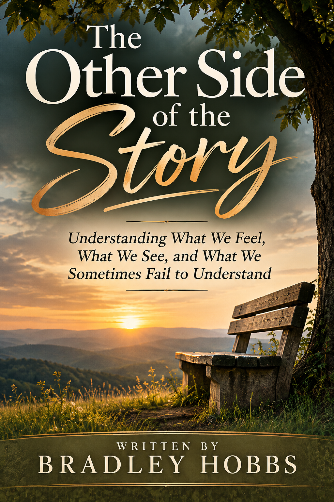

Every Relationship Has More Than One Perspective.
The Other Side to the Story explores how two people can experience the same relationship in very different ways. Through honest reflection and practical insight, it considers communication, expectations, misunderstandings, accountability, and the importance of listening beyond our own assumptions.
This is an invitation to see more of the picture, recognize our own part, and make thoughtful decisions about the relationships that matter most. Understanding does not mean excusing hurtful behavior or abandoning healthy boundaries. It means being willing to listen before deciding what the whole story means.
Read About the Book →The Car Ride Home
The conversation that began this journey and the question that inspired the book.
When Things Feel Unsettled
Chapters 1–4 · Confusion and tension
The Space Between People
Chapters 5–8 · Silence and reflection
Seeing What We Could Not See Before
Chapters 9–12 · Awareness and responsibility
Choosing a Different Way Forward
Chapters 13–15 · Understanding and change
The goal is not to decide whose version deserves to be heard. It is to become willing to listen carefully enough to understand the fuller story, including the parts that ask something of us.
There Is Another Side to the Story
A closing reflection on listening, perspective, and the willingness to understand.